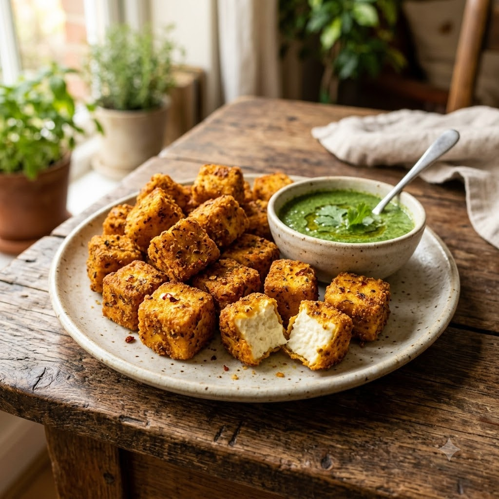

Chef Magic (Marinade) → Airfryer (Grill) 200°C Marinate 30 min + Grill 14 min — Serves 4
Prep ahead: Marinate the paneer for at least 30 minutes — the gram flour coating needs time to set and cling well.
Ingredients
Method
Tip: Roasting the besan for a minute before mixing it in removes the raw taste that can otherwise come through in the coating.